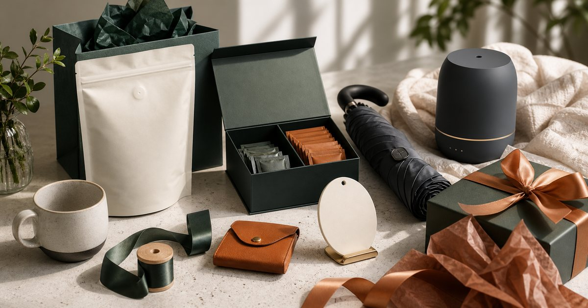

Elite Fashion｜質感送禮怎麼選：咖啡、茶、按摩設備、雨傘與客製小物
送禮不只是預算問題，也關乎對方是否用得上。從咖啡、茶、雨傘、客製小物到居家放鬆設備，整理更不失手的選擇框架。

送禮先判斷關係距離：實用、體面，還是紀念
同事、客戶、家人與朋友需要的禮物不一樣。關係越正式，越要避免太私密；關係越熟，越可以加入個人習慣與紀念感。
可以把 LamiFans、Teavoya、輝葉良品、馬克老爹、FULTON、Mister 手作皮件與大檜仁心 放在同一張選擇表裡，但不要只看品牌名或包裝。編輯部會先看它們各自適合的位置：日常補給、待客分享、送禮、備餐、移動攜帶或辦公室共用，再決定哪些值得放進購物清單。
比較實用的順序是先確認 收禮者是否能自然使用、是否需要尺寸或偏好資訊。常見失誤是 用自己的喜好代替對方的生活方式；在 商務往來、搬家拜訪、升遷祝賀與家人節慶 裡，選擇能被穩定使用的品項，通常比一次買齊更重要。
- 正式關係優先選低冒犯、易使用的禮物。
- 熟人可加入客製、皮件或居家物件。
咖啡與茶適合分享，也適合降低壓力
咖啡和茶最大的優點，是容易分享、不太占空間，也能自然出現在辦公室或家中。送這類禮物時，先看對方是否有沖煮條件，再看包裝與風味。
可以把 Teavoya、馬克老爹、大檜仁心與 LamiFans 放在同一張選擇表裡，但不要只看品牌名或包裝。編輯部會先看它們各自適合的位置：日常補給、待客分享、送禮、備餐、移動攜帶或辦公室共用，再決定哪些值得放進購物清單。
比較實用的順序是先確認 對方是否常喝咖啡或茶、是否有器具、是否需要分送同事。常見失誤是 送了需要複雜器具的品項，對方反而不好使用；在 客戶拜訪、同事感謝與工作室開幕 裡，選擇能被穩定使用的品項，通常比一次買齊更重要。
- 濾掛、茶包或易沖泡形式適合多數場合。
- 若對方重視儀式感，再考慮更完整的咖啡茶禮。
客製小物要克制，不能讓對方難收納
客製化最有紀念感，也最容易失手。名字、日期、品牌標記或祝福語都可能很有心，但如果物件本身不好用，就會變成不捨得丟也不常用的負擔。
可以把 LamiFans、Mister 手作皮件、FULTON 與 Teavoya 放在同一張選擇表裡，但不要只看品牌名或包裝。編輯部會先看它們各自適合的位置：日常補給、待客分享、送禮、備餐、移動攜帶或辦公室共用，再決定哪些值得放進購物清單。
比較實用的順序是先確認 客製內容是否簡潔、物件本身是否日常可用。常見失誤是 把客製字樣做得太滿，讓禮物失去日常使用彈性；在 企業禮贈、團隊紀念與朋友重要節點 裡，選擇能被穩定使用的品項，通常比一次買齊更重要。
- 客製字樣越簡潔，使用場景越多。
- 先選實用品，再決定是否加上紀念細節。
雨傘與皮件是日常型禮物，關鍵在場合感
雨傘與皮件適合送給需要通勤、常出差或重視日常質感的人。它們不需要太多解釋，但要避免尺寸、顏色或風格太挑人。
可以把 FULTON、Mister 手作皮件、LamiFans 與大檜仁心 放在同一張選擇表裡，但不要只看品牌名或包裝。編輯部會先看它們各自適合的位置：日常補給、待客分享、送禮、備餐、移動攜帶或辦公室共用，再決定哪些值得放進購物清單。
比較實用的順序是先確認 對方通勤方式、常用包款大小與穿搭風格。常見失誤是 選了太鮮明的顏色或太私人的款式，讓對方不容易使用；在 上班族通勤、商務旅行與城市移動 裡，選擇能被穩定使用的品項，通常比一次買齊更重要。
- 正式場合可選低調色與經典造型。
- 小皮件比大包款更不容易踩到尺寸與風格問題。
按摩設備與居家物件要先確認空間
居家放鬆設備作為禮物要更謹慎，因為它需要空間、插座、收納和使用習慣。不要把它說成解決身體問題的答案，而是當成居家物件來看。
可以把 輝葉良品、大檜仁心、Teavoya 與 LamiFans 放在同一張選擇表裡，但不要只看品牌名或包裝。編輯部會先看它們各自適合的位置：日常補給、待客分享、送禮、備餐、移動攜帶或辦公室共用，再決定哪些值得放進購物清單。
比較實用的順序是先確認 對方住家空間、是否願意放在明顯位置、是否需要家人共用。常見失誤是 送了體積較大的物件，對方收納和使用都變成壓力；在 家人節慶、搬家祝賀與熟人生日 裡，選擇能被穩定使用的品項，通常比一次買齊更重要。
- 體積越大，越需要先確認對方接受度。
- 相關用品只能作為舒適度與居家情境參考，不寫效果承諾。
最不失手的送禮順序：先用途，再包裝，最後客製
一份禮物的成熟度，常常來自順序。先確定用途，再看包裝是否體面，最後才決定要不要客製。反過來做，很容易得到漂亮但難使用的禮物。
可以把 LamiFans、Teavoya、輝葉良品、馬克老爹、FULTON、Mister 手作皮件與大檜仁心 放在同一張選擇表裡，但不要只看品牌名或包裝。編輯部會先看它們各自適合的位置：日常補給、待客分享、送禮、備餐、移動攜帶或辦公室共用，再決定哪些值得放進購物清單。
比較實用的順序是先確認 對方一週內是否可能使用、半年後是否仍適合。常見失誤是 先追求驚喜，卻忘記禮物要進入對方生活；在 商務、家人、朋友與客戶往來都能使用的 evergreen 禮物情境 裡，選擇能被穩定使用的品項，通常比一次買齊更重要。
- 用途清楚，比包裝華麗更重要。
- 客製是加分項，不應取代物件本身的實用性。
FAQ
送禮要不要一定選客製化？
不一定。客製化適合紀念性較高的關係，但正式或不熟的對象，簡潔實用的禮物通常更穩。
按摩設備可以當禮物嗎？
可以考慮，但要先確認空間、收納與使用習慣，並避免把它描述成改善身體狀況的保證。
咖啡或茶送禮如何避免太普通？
可以從包裝、沖泡門檻、分送便利性與對方日常習慣下手。普通不一定不好，真正重要的是對方會不會用。
下一步建議
如果你正在準備一份不想失手的禮物，可以先用用途、場合與使用門檻篩選，再決定包裝與客製細節。
重要警語
本文為一般送禮與生活物件選購情境整理，不構成個別產品測試或效果保證。按摩、香氛與食品飲品相關品項請依個人狀況與商品頁說明使用，價格、規格、活動與庫存請以商品頁公告為準。
本文含品牌／商品導購連結；若你透過部分商品連結前往選購，Elite Fashion 可能取得合作收益。本文仍以編輯判斷與使用情境整理為主，價格、規格、活動與庫存請以商品頁公告為準。